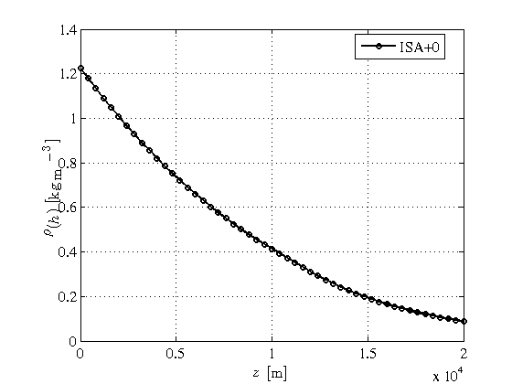
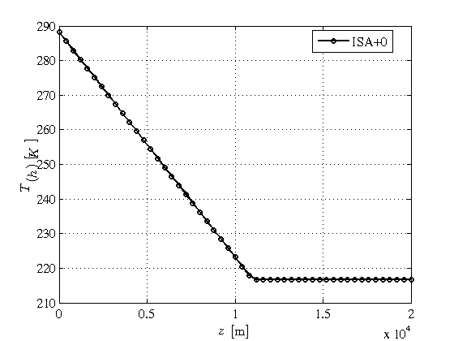
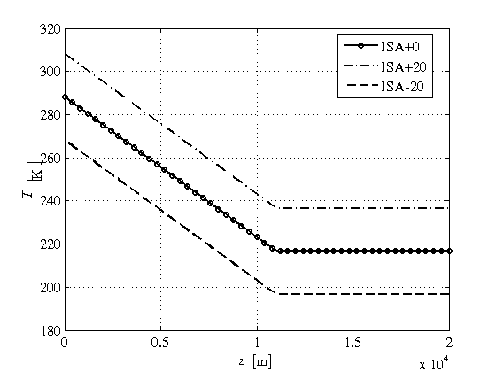

Contents
Using the International Standard Atmosphere
This demo shows how to use the International Standard Atmosphere implementation of Heroes toolbox.
Please note one implicit rule of heroes is that each physic variable is computed using the Internation System of Units.
close all
setPlot
Assign an ISA data type to a variable
The first step in most of the heroes computation is to assign an ISA data type to a variable. The next statement assigns a +0 ISA to the atm0 variable. After the assignment we can look at the variable and check that the variable atm0 is a structure with fields which most of them are function handles and constants that define the ISA.
atm0 = getISA;
We can plot the pressure variation of the ISA with the geopotential altitude z as follows. First we define a vector of altitudes from sea level to 12000 metersand then we use the function handle field 'pressure' to obtain the pressure. Finally, we plot the pressure in kPa as a function of the geopotential altitude.
zp = linspace(0,12e3,101); p = atm0.pressure(zp); figure(1) plot(p*1e-3,zp); hold on; xlabel('$$p$$ [kPa]'); ylabel('$$z$$ [m]'); grid on;
We can proceed analogously using the temperature function handle field to plot the temperature variation and check that the temperature gradient is contant at the troposphere and changes at the tropopause, i.e. 11000 meters, just to be constant. For this example we plot the temperature in Celsius degrees.
T = atm0.temperature(zp); figure(3) plot(T-273,zp); hold on; xlabel('$$T$$ [$$^o$$]'); ylabel('$$z$$ [m]'); grid on;

Using plotISA
Most of heroes data types have its own plot function to ease the plot task. ISA data type has its own plot function which is called plotISA. This function helps to plot the variables of the ISA. For instance, the next statement plots the atm0 instance of ISA using as legend for the plots the label 'ISA+0'
plotISA(atm0,{'ISA+0'});
  As it can be seen plotISA plots seven variables, that is pressure, density, temperature, speed of sound and the pressure, density and temperature ratios with respect to their sea level counterparts as functions of geopotential altitude from sea level to 20 km. This behavior is controlled by the options machinery of heroes. In fact there exist two functions that control the default behaviour of plotISA and they are setHeroesPlotOptions which controls overall heroes plot options and setISAPlotOptions which control the particular behaviour of plotISA. We can override the default options using a pair of additional values, that is the property name to be changed and the new value to be input.
For instance, we would like to change the value of altitude used at the plots and we need to show the variation with geopotential altitude between 1000 meters and 2000 meters. We should override the property name of hspan, so the next statement plots as before but for a geopotential altitude variation between 1000 and 2000 meters.
hi = linspace(1000,2000,31);
plotISA(atm0,{'ISA+0'},'hspan',hi);
Another very important property to be changed is the defaultVars property which setups the list of fieldnames to be plotted. For the plotISA case the list of default fieldnames contains: pressure, temperature, density, soundSpeed, sigma, delta and theta. Now we would like to plot only the nondimensional functions of density, pressure and temperature ratios. To do so, we should change the defaultVars fieldname and set as the new value an axis data type structure using the function getaxds. Then, first we should define the new set of independent variables to be plot using getaxds. The input arguments of getaxds are first the cell of fieldnames to be plotted, second the cell of labels and third the vector of scale factors to multiply the original data which is in the international unit system.
azds = getaxds({'sigma','delta','theta'},...
{'$$\sigma$$ [-]','$$\delta$$ [-]','$$\theta$$ [-]'},...
[1,1,1]);
plotISA(atm0,{'ISA+0'},'defaultVars',azds);
plotISA not only plots one instance of an ISA data type but also cells of ISA data types. We can define other ISA data types by specifying the the sea level temperature. To do so, we input the increment of temperature with respect to the standard value of 288 K as an argument of the constructor getISA. That is, for specifying an ISA+20 and ISA-20 atmospheres, we are specifying that the temperature at sea level are 298K and 278K respectively, we use the next two statements
atm20p = getISA(20); atm20m = getISA(-20);
Now we are interested in plotting the three ISA data types defined in this demo, that is atm0, atm10p and atm10m variables. The plotISA function is able to plot cells of ISA data types. Therefore, to compare the three atmospheres we should define a cell of ISA data. We can use plotISA by specifying a legend cell of three elements to denote each of the atmospheres. For the example shown here, we also override the default variables and we just plot the temperature value.
atm = {atm0,atm20p,atm20m};
leg = {'ISA+0','ISA+20','ISA-20'};
azds = getaxds({'temperature'},...
{'$$T$$ [K]'},...
1);
plotISA(atm,leg,'defaultVars',azds);
